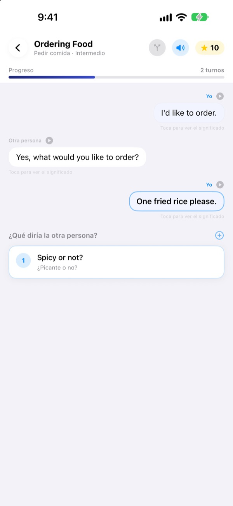
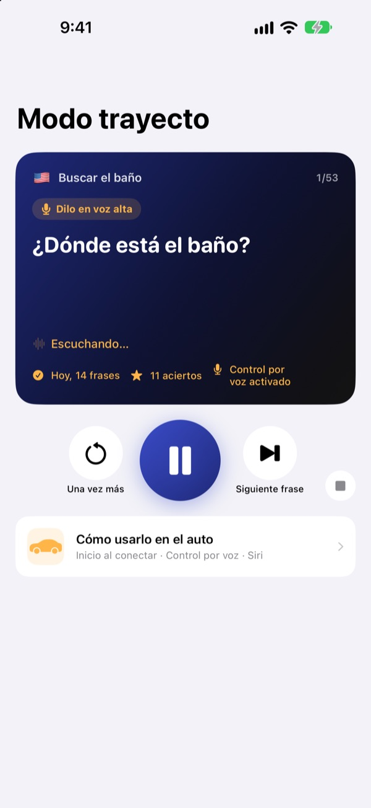
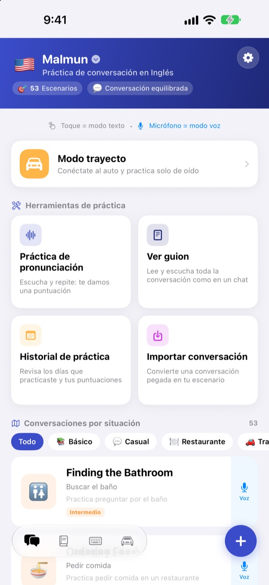
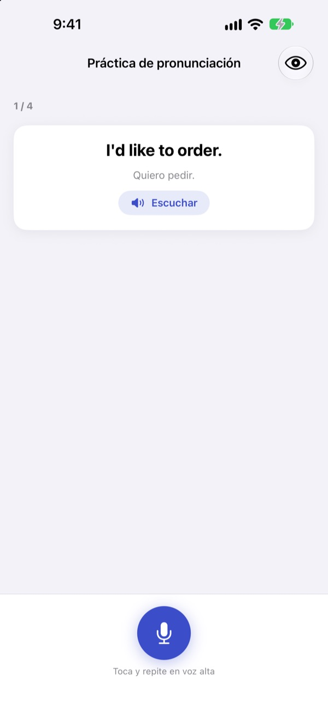

Deja de quedarte en blanco.
Habla tú primero.
Malmun es una app de conversación en la que cada respuesta que eliges lleva el diálogo por un camino distinto. Aprende inglés, coreano, japonés, chino o indonesio, y en el coche practica solo con el oído y la voz.
Los diálogos con ramas, la práctica de pronunciación y el vocabulario son gratis.

Sigue tú la conversación
Este es “Saludo por la mañana”, un diálogo en indonesio tal como viene en la app. Cada frase que eliges lleva la charla hacia otro lado.
¿Te sabías la frase y luego no supiste qué contestar?
En el libro, los diálogos siempre salen como están escritos. En la vida real, la otra persona te responde algo que no esperabas. Malmun te deja recorrer antes todas las ramas de una conversación, para que tengas la siguiente frase lista venga lo que venga. Hasta el trayecto a casa se convierte en práctica.
Practica de oído mientras conduces
El Modo trayecto suena por los altavoces del coche con Bluetooth o CarPlay. Primero oyes el significado, un tono te da tiempo para decirlo y luego escuchas la respuesta una vez despacio y otra a velocidad normal.
Avanza y repite con los botones del volante, o di siguiente, otra vez o más despacio cuando te toque. Hace una pausa cuando el GPS da indicaciones.

Todas las situaciones del viaje y del día a día
Cada idioma trae 53 conversaciones por situación: lo básico, charla cotidiana, restaurante, transporte, aeropuerto, hotel, compras, turismo y emergencias.
Si aprendes indonesio, hay más: 5 charlas hechas a mano, 3 cursos del día de 6 escenas cada uno con horario semanal y 100 palabras para viajes de trabajo.

Comprueba que lo dijiste bien
La práctica de pronunciación te da una puntuación y marca en color las palabras que acertaste y las que se te escaparon.
En Ver guion tienes todo el diálogo como un chat: escúchalo de corrido o tapa los significados para ponerte a prueba.

Empezar es así de fácil
- 1
Elige un idioma
Toca la bandera arriba en la pantalla de inicio. Tus frases y tu vocabulario se guardan aparte para cada idioma.
- 2
Abre una conversación
Toca las respuestas en modo texto, o toca el micrófono y habla: el modo voz busca la respuesta más parecida.
- 3
En el coche, Modo trayecto
Conecta el teléfono al coche y dale a reproducir. No hace falta mirar la pantalla.
Controles del Modo trayecto
- Volante: pista siguiente
- Siguiente frase
- Volante: pista anterior
- La misma frase otra vez
- Botón de reproducir
- Pausar y seguir
siguiente·pasa- Siguiente frase
otra vez·repite- Volver a escucharla
más despacio·más rápido- Cambiar la velocidad de lectura
siguiente escena- Pasar a la siguiente conversación
para·pausa- Dejar de practicar
- Siri: “Empieza la práctica del trayecto en Malmun”
- Empezar sin tocar el teléfono
Los comandos de voz solo se escuchan en tu turno, después del tono. Si dices bien la frase, oyes “¡Muy bien!”. La frase actual aparece en la pantalla de reproducción del coche. No hay una pantalla de app propia en CarPlay.
Casi todo es gratis. Malmun Pro abre el resto.
Gratis
- Charlas con ramas y cursos del día (indonesio)
- Conversaciones por situación: lo básico y charla cotidiana
- Modo trayecto, 3 escenas al día
- Práctica de pronunciación, guion, importar diálogos e historial
- Mis frases, tarjetas de vocabulario y teclado de frases
- Compartir escenarios con amigos y crearlos con IA
Malmun Pro
- Todas las conversaciones por situación: restaurante, transporte, aeropuerto, hotel, compras, turismo y emergencias
- Modo trayecto sin límite
- Vale para los seis idiomas
Suscripción anual o compra única de por vida
Consulta los precios en la app o en el App Store. La suscripción anual se renueva sola si no la cancelas al menos 24 horas antes de que termine el periodo.
Preguntas frecuentes
¿Cómo la uso en el coche?
Conecta el iPhone al coche por Bluetooth o CarPlay, abre el Modo trayecto y dale a reproducir. El sonido sale por los altavoces y la frase actual aparece en En reproducción. También puedes decirle a Siri “Empieza la práctica del trayecto en Malmun”, o crear una vez una automatización en Atajos para que empiece cuando se conecte CarPlay (o el Bluetooth del coche).
¿El micrófono está siempre escuchando?
No. Solo escucha en tu turno, después del tono, con el micrófono del teléfono, y lo que oye se procesa en tu dispositivo. Los comandos se dicen en el idioma de la app.
¿Qué idiomas puedo aprender?
Inglés, coreano, japonés, chino e indonesio. Si usas la app en español, los significados y los comandos salen en español.
No reconoce bien mi pronunciación.
El reconocimiento de voz funciona en el idioma que estás aprendiendo. Prueba en un sitio más tranquilo y comprueba que el reconocimiento de voz de ese idioma esté descargado en tu dispositivo.
¿Cómo añado el teclado?
Ve a Ajustes ▸ General ▸ Teclado ▸ Teclados ▸ Añadir teclado nuevo y elige el teclado de Malmun. Mientras escribes, toca el globo para cambiar a él. No necesita acceso completo. Para ver menos frases, toca el icono del teclado abajo a la derecha en la pantalla de inicio ▸ Gestionar teclado.
No veo un escenario que compartió un amigo.
Compartir con amigos funciona con iCloud, así que ambos deben tener la sesión iniciada en iCloud. Si aun así no aparece, cierra la app del todo y vuelve a abrirla.
¿Qué necesito para crear escenarios con IA?
Pon tu propia clave de API de Anthropic en la app y escribe un tema: te crea una conversación nueva. Todo lo demás funciona sin clave.
¿Cómo cancelo la suscripción o pido un reembolso?
Los pagos los gestiona Apple. Para cancelar, ve en el iPhone a Ajustes ▸ Cuenta de Apple ▸ Suscripciones ▸ Malmun. Para un reembolso, pídeselo a Apple en reportaproblem.apple.com.
Cambié de iPhone y perdí Pro.
Inicia sesión con la misma cuenta de Apple y, en Malmun, toca Ajustes ▸ Malmun Pro ▸ Restaurar compras.
¿Dónde se guarda mi progreso?
No necesitas cuenta. Lo que aprendes se queda en tu dispositivo y en tu iCloud. Sin anuncios ni rastreo: solo se envían estadísticas de uso anónimas y diagnósticos de errores. También puedes reportar fallos o pedir funciones en GitHub Issues (github.com/M1zz/IndonesianSmallTalk/issues).
¿Dudas o sugerencias? Escríbenos a leeo@kakao.com, desde Ajustes ▸ Enviar comentarios en la app o por Instagram a @lee25_ios.